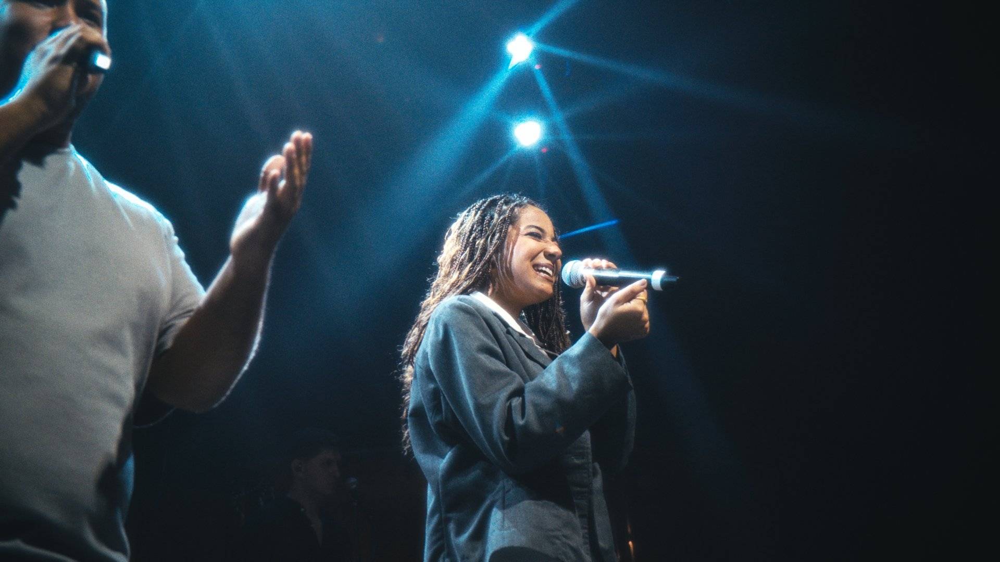
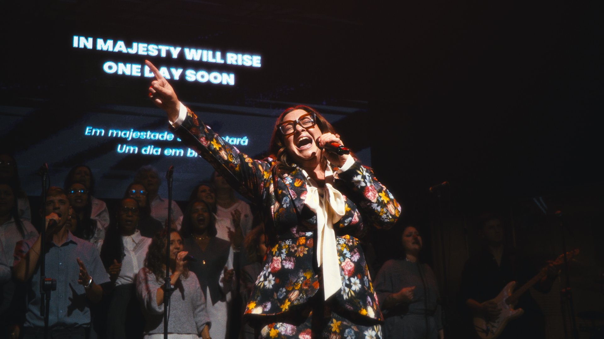
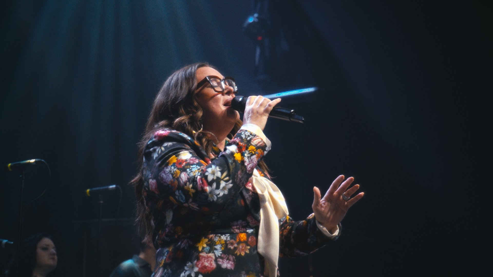
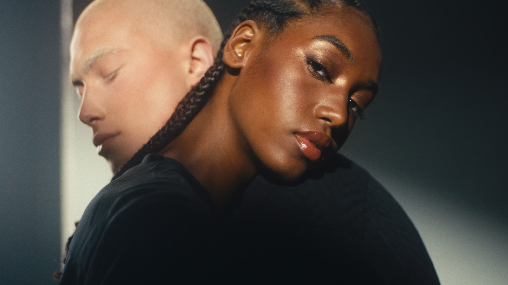
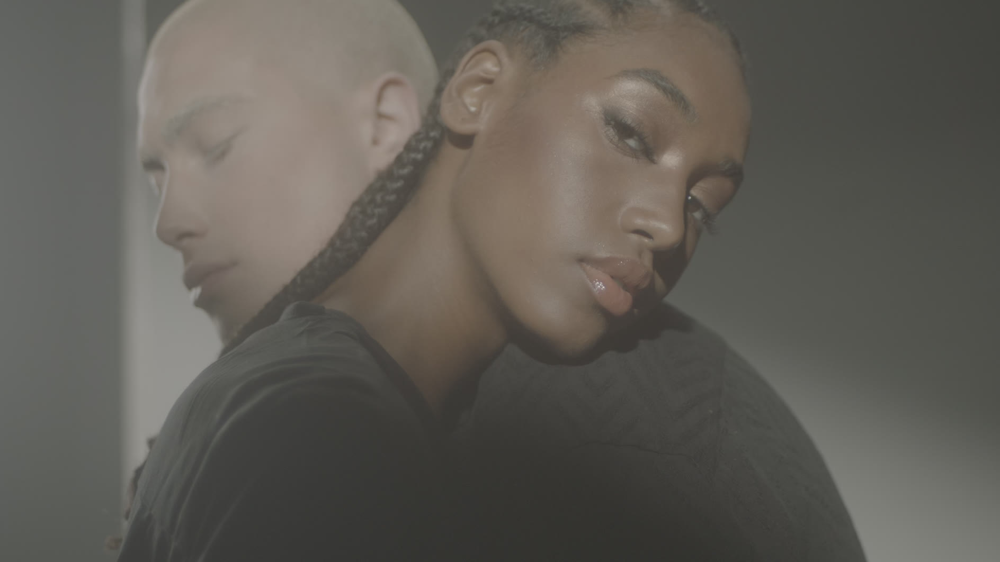

Não filmamos vídeos. Construímos narrativas que movem empresas.
Trabalhos




- Jabson Lima
- Jesus in Concert
 Assistir
Assistir
Aftermovie
Assistir


Óticas Faraó
Campanha
Herdy Odontologia
“O Weverton transformou a forma como a Herdy Odontologia aparece nas redes. Conteúdo com cara profissional, entrega rápida e zero dor de cabeça. Recomendo pra qualquer clínica que leva marketing a sério.”
Jabson Lima
The Path of Jabson Lima. Mini-documentário.
 Assistir
Assistir
Jesus in Concert, color grading





AntesDepois
Silhueta da moça de gorro contra o pôr do sol no mar. Moça de óculos escuros e fones sob céu azul, com palmeiras. Posto de gasolina antigo sob céu azul. Moça sentada diante da baía com barcos, no fim de tarde.
Vídeo sem estratégia é só movimento.
- Vídeo institucional
- Autoridade
- Vídeo comercial
- Percepção de valor
- Vídeo de marca
- Posicionamento
- Reels mensais
- Presença estratégica
“O Weverton é o tipo de editor que você quer do lado quando o conteúdo precisa chegar certeiro pro cliente. Qualidade consistente, entende o briefing de primeira e entrega com ritmo.”
Weverton Souza dirige a NorthLab.